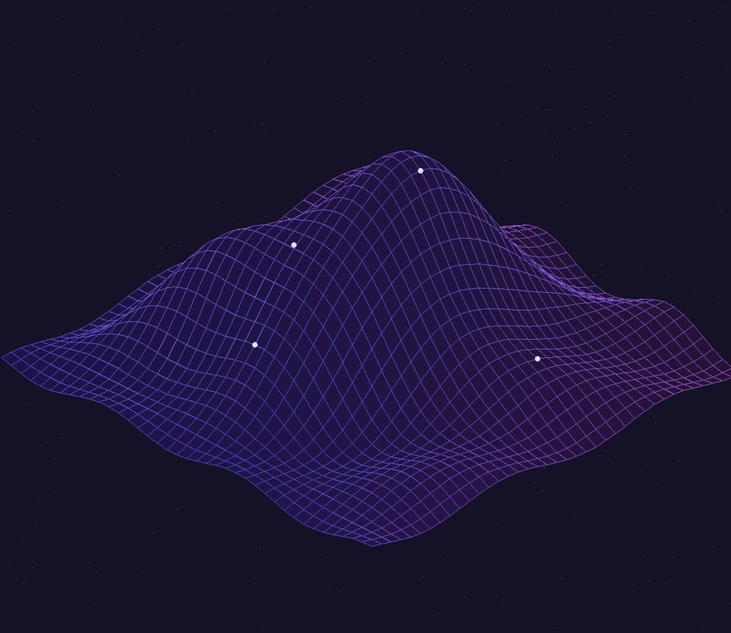

Pruned full node
Follows the chain and serves recent blocks, RPC and snapshots.
- 8 CPU cores
- 16 GB RAM
- 500 GB NVMe SSD
celestia-rs is a Celestia consensus node and data availability bridge in one process. Run a full node or a validator next to Go peers, with a fraction of the memory and disk.

Each pair started one celestia-rs node and one Go node (celestia-app v11.0.0, plus celestia-node v0.36.0 for the bridge) on identical cold cloud VMs, restored the same Mainnet snapshot, and checked the block ID against an independent RPC. Lower is better on every chart.
Both served the same 32 share reads with identical results.
Release binaries run on Apple silicon macOS and on x86-64 or ARM64 Linux with glibc 2.35 or newer. Requirements are the same on Mainnet and Mocha.
Follows the chain and serves recent blocks, RPC and snapshots.
A pruned node that signs blocks. Same machine, plus a key backup kept offline.
Keeps every block and app state from its start height. Disk grows with the chain.
Why these numbers: on an 8-vCPU VM, celestia-rs peaked at 6.0 GB of memory during state sync and 4.1 GB with the DA bridge on. Its design budget is 12 GB at peak and 350 GB of pruned disk after one year, so 16 GB and 500 GB leave headroom for compaction and snapshots. The archive figure is a starting size: plan to add storage as history accumulates. Hardware budgets and storage defaults
Pick a network, a role and how much history to keep. The commands below update to match. You need Bash, curl and jq, and the default node ports free. A full node needs no wallet, TIA or fees.
Copy a prompt for Mainnet · full node · pruned and paste it into an agent on the machine that will run the node.
General Mainnet validator recommendation is pending qualification (ADR 0008). Try it on Mocha first, and never run two nodes with the same signing key.
The installer checks the archive’s SHA-256. A release reaches
the mocha channel after 24 hours on a devnet, and
mainnet after 24 more hours on Mocha.
curl --proto '=https' --tlsv1.2 -fsSL https://raw.githubusercontent.com/celestiaorg/celestia-rs/main/scripts/install.sh | sh -s -- --channel mainnet
~/.celestia-rs/bin/celestia-rs version --longPaste this into Bash. It checks a recent block hash against two independent RPCs, creates a fresh node home, applies your history setting and starts state sync. Keep the terminal open.
(
set -eu
node="$HOME/.celestia-rs/bin/celestia-rs"
home_dir="$HOME/.celestia-rs/mainnet"
chain=celestia
rpc=https://rpc.celestia.pops.one:443
witness=https://celestia-rpc.polkachu.com:443
latest=$(curl -fsSL "$rpc/block" | jq -er --arg c "$chain" '.result.block.header | select(.chain_id == $c) | .height | tonumber')
height=$((latest - 3000))
hash_at() {
curl -fsSL "$1/block?height=$height" | jq -er --arg c "$chain" --arg h "$height" '
.result | select(.block.header.chain_id == $c and .block.header.height == $h)
| .block_id.hash | select(test("^[0-9A-Fa-f]{64}$"))'
}
hash=$(hash_at "$rpc")
if [ "$hash" != "$(hash_at "$witness")" ]; then
echo "RPCs disagree at height $height. Stopping." >&2
exit 1
fi
mkdir "$home_dir" # first launch only: needs a fresh directory
if ! "$node" init my-node --network mainnet --home "$home_dir" >"$home_dir/init.log" 2>&1; then
tail -n 10 "$home_dir/init.log" >&2
exit 1
fi
rm "$home_dir/init.log"
cfg() { "$node" config set "$@" --home "$home_dir"; }
cfg config statesync.rpc_servers "$rpc,$witness"
cfg config statesync.trust_height "$height"
cfg config statesync.trust_hash "$hash"
cfg config statesync.enable true
# Pruned: keep recent state and 3,000 blocks; serve snapshots to peers.
cfg app pruning default
cfg app min-retain-blocks 3000
cfg app state-sync.snapshot-interval 1500
ulimit -n 4096
exec "$node" start --network mainnet --home "$home_dir"
)In a second terminal. The node is current once
catching_up is false and
latest_block_height keeps rising.
~/.celestia-rs/bin/celestia-rs status --home ~/.celestia-rs/mainnet | jq '.sync_info | {latest_block_height, catching_up}'Stop with Ctrl+C. Restart later from the same home:
~/.celestia-rs/bin/celestia-rs start --network mainnet --home ~/.celestia-rs/mainnetOnce the node is current, create an operator
key, fund its address, then register. Write the mnemonic down
offline and back up config/priv_validator_key.json.
Commission must be at least 0.20. See the validator runbook for monitoring, upgrades and safe shutdown.
The Rust DA bridge runs inside your consensus node and serves DA
data from its blockstore. Enabling it replaces a separate Go
celestia-node bridge.
Start a non-validating Mocha node using the quickstart above. Stop it, then restart with the same home and add the DA listeners:
~/.celestia-rs/bin/celestia-rs start --network mocha --home ~/.celestia-rs/mocha \
--bridge-rpc-listen 127.0.0.1:26658 --bridge-p2p-listen 0.0.0.0:2121DA RPC stays on loopback. Allow inbound TCP on port 2121 for the DA peers you want to serve. Once the node catches up, use its DA peer address to verify reads from a Go light node on Mocha.
A Go bridge operator runs celestia-appd for consensus
and a separate celestia-node bridge. With bridge
listeners on, celestia-rs start does both jobs from
one local blockstore.
Run a full node or sign as a validator. The ABCI++ application executes transactions. Consensus, block propagation, peer exchange, evidence handling and the CAT mempool interoperate with Go peers.
Publish extended headers, reconstruct data squares and answer namespace proof and blob requests. The authenticated DA JSON-RPC and libp2p listeners are opt-in, over TCP or QUIC.
Block sync replays blocks from peers. State sync bootstraps from a trusted snapshot. Operators control pruning, snapshot retention and DA archival storage.
The da-light command samples data availability from
a trusted DA peer, with its own home. Sampling progress persists
across restarts.
Go replay fixtures check app hashes for staking, governance, authz, fee grants, vesting, blobs, Fibre, IBC, Hyperlane, evidence and upgrades. Nightly differential fuzzing complements mixed-validator devnets.
Go-compatible keys, keyrings, genesis, query and tx commands. CometBFT RPC and WebSocket, gRPC and REST. Prometheus metrics, and systemd or launchd services.
A pruned full node or validator needs 8 CPU cores, 16 GB RAM and a 500 GB NVMe SSD. An archive node needs the same CPU and memory and a 4 TB NVMe SSD to start, with room to grow. See hardware requirements.
The project runs validators on Mocha and Mainnet. Its general Mainnet recommendation is pending qualification. Review ADR 0008 and the validator runbook before you move signing duties.
Follow the migration runbook. Stop the old signer, move the key with its latest signing state, and bootstrap the Rust database as directed. Two processes with the same signing key risk slashing.
Local-file signing and remote signing with Horcrux or tmkms through
priv_validator_laddr are supported. Use Horcrux
v3.3.3-celestia or tmkms v0.14.0-celestia
on chains with vote extensions enabled.
Remote signer setup.
Direct HSM integration is not in scope yet.
Linux with the packaged service. Install the
daily auto-update timer
and set CHANNEL to mainnet or
mocha. It installs the channel’s release, restarts the
node and rolls back if the node does not catch up.
macOS with launchd. The packaged updater deploys to a Mocha canary first, checks progress and app hashes, then updates Mainnet, and rolls back on a failed health check. See the auto-update guide.
Linux with a systemd user service. Save the
installer, then add a daily cron line. It installs the channel’s
release and restarts the service when the binary changed. The
replaced binary stays as celestia-rs.prev.
mkdir -p ~/.celestia-rs/bin
curl -fsSL https://raw.githubusercontent.com/celestiaorg/celestia-rs/main/scripts/install.sh -o ~/.celestia-rs/bin/install-release.sh
crontab -e15 4 * * * (export XDG_RUNTIME_DIR="/run/user/$(id -u)"; set -e; unit=celestia-rs.service; systemctl --user is-active --quiet "$unit"; sh "$HOME/.celestia-rs/bin/install-release.sh" --no-modify-path --channel mainnet; pid=$(systemctl --user show "$unit" -p MainPID --value); if [ "$pid" -gt 0 ] && ! [ "/proc/$pid/exe" -ef "$HOME/.celestia-rs/bin/celestia-rs" ]; then systemctl --user try-restart "$unit"; fi) >>"$HOME/.celestia-rs/update.log" 2>&1Validators: test each release on a non-signing node first and keep the latest signing state through every restart.
With the Rust DA bridge enabled, your consensus node also serves DA data, so you can run both roles without a separate Go bridge. Enable the integrated bridge on Mocha by adding the DA RPC and P2P listeners to your start command.
The default bridge window is 169 hours of block time. Set
retention-hours to change it, or pass
--bridge-archival on a fresh index. Query
header.Tail and header.LocalHead to see
the range actually served.
Check peer count and height, and compare with an independent RPC. Public seeds go offline often: the Mainnet peer guidance shows how to load live peers from a public RPC. For a long catch-up, use the trusted state-sync bootstrap.
Install the packaged launchd or systemd unit, set its home and network, and watch its logs and Prometheus metrics. The service guide covers restarts, upgrades and backups.